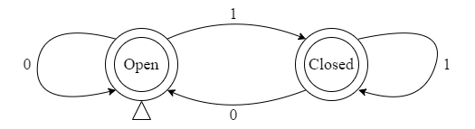
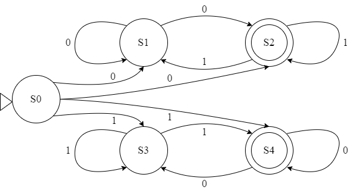

01A
约 21171 个字 预计阅读时间 71 分钟
为了讨论计算，我们首先需要有一个计算问题（problem）。为了定义计算问题，我们需要引入语言（language）的概念。而要解决这个问题，我们需要有一个计算设备（computation device），这又使得我们引入自动机（automata）的概念。在这一节中，我们讨论的对象是这两类中最简单的形式：正则语言（regular language）和有限状态机（finite automata）。本文作为 A 面讲的是基础部分，基本上已经完全覆盖了课程内容，以后可能会写的 B 面则更偏重更多理论发展和更现代化的理论。而在 B 面中，我们会假定读者已经具备了足够的数学能力，因为在那里我们会更多地使用代数（以及可能的拓扑）来解决计算理论相关的问题。
问题和语言 Problems & Languages¶
回忆一下我们迄今为止碰到过的计算问题。我们会问：一个图（graph）是否是一棵树（tree），一个逻辑表达式是否是可满足的（satisfiable）或者一个表达式（expression）是否是最简的（simplified）。我们将这种判断是或否的问题称为决策问题（decision problem）。这种问题是计算理论研究最主要的对象，也是在我们这个系列前半部分我们会主要讨论的问题。
是/否的判断事实上是一个取值为 0/1 的函数，我们可以将其视为一个集合的示性函数（characteristic function）：
这样的表示使得我们将一个问题转化为一个集合。下一个问题是，我们要怎样来表述这个集合？我们知道，我们可以用二进制表示一个整数，也可以用十进制表示一个整数，这些方法在我们判断一个数是奇数还是偶数的问题本身看来没有什么影响，但是它可能会影响计算过程。为了清晰地描述对一个问题的计算过程，我们需要定义某种“编码方式”作为讨论的对象，也就是说，我们要有一个字母表（alphabet）。
定义
字母表 \(\Sigma\) 是一个由有限个符号（symbol）组成的集合，在某个字母表上的字符串（string over an alphabet）\(w\) 是有限个字母表中的符号组成的序列（sequence），这个字符串的长度就是字符串中符号的个数，记作 \(\vert w \vert\)。
当然，这里我们似乎没有定义什么叫符号，因为它事实上没啥影响，你可以用 0, 1, 2, 3，也可以用甲乙丙丁，甚至如果你乐意的话，也可以用不同的 emoji 表情，这种等价性是显而易见的。
需要额外说明，字符串长度可以为 0，这个字符串被我们称为空字符串（empty string，或字，word，本文会混用这两个术语），在同一个字母表上，有且仅有一个空串，记作 \(e\)。当然，可以定义字符串上的运算，都很常规：
定义
- 衔接（concatenation），\(vw\) 就是前半段是 \(v\) 的内容，后半段是 \(w\) 的内容；
- 幂次（exponentiation），\(w^i\) 就是把字符串 \(w\) 重复 \(i\) 次；我们定义 \(\forall w, w^0=e\)；
- 翻转（reverse），\(w^R\) 就是把字符串 \(w\) 倒过来；我们定义 \(e^R=e\)；
注意！衔接操作作为运算（operation），空串作为单位元（identity），我们可以从一个字母表生成一个自由幺半群（free monoid）。这是为后面的补充内容做铺垫：对于正则语言（regular language），它的句法幺半群（syntactic monoid）的结构可以直接导出判断一个语言是否正则的充要条件：Myhill-Nerode 定理。
在继续之前，我们再引入一些记号来表示从字母表到字符串集合的映射。
记号
- \(\Sigma^i\) 指字母表中所有长度为 \(i\) 的字符串的集合；
- \(\Sigma^+\) 指字母表中所有非空字符串的集合：\(\Sigma^+ = \cup_{i=1}^\infty \Sigma^i\)；
- \(\Sigma^\ast\) 指字母表中所有字符串的集合：\(\Sigma^\ast = \Sigma^+ \cup \{e\}\)，事实上这就是前面的生成的自由幺半群；
接下来对语言的定义也就顺理成章了：
定义
一个字母表 \(\Sigma\) 上的语言 \(L\) 是 \(\Sigma^\ast\) 的一个子集。
当然，它可以是全集，也可以是空集。在这种情况下，我们的问题就变成了：给定 \(x \in \Sigma^\ast\)，计算 \(\chi_L(x)\) 的值。这样，我们就完成了从问题到语言的转化。语言之间的运算除了集合运算之外，常见的还有衔接、幂次和星（star）：
定义
- \(L_1L_2 = \{uv: u\in L_1, v\in L_2\}\)；
- \(L^i = \{w_1w_2\cdots w_i: w_j \in L\}\)，\(L^0 = \{e\}\)；
- \(L^\ast = \cup_{i=0}^\infty L^i\)；
我们可以明确地看到衔接和乘积之间的关系。但是，仅此而已吗？注意，我们还有集合的并操作，它可以在某种意义上被与一个加法等同，如果记其为 \(L_1 + L_2\)，那么，我们容易发现，\(\mathcal{P}(\Sigma^\ast)\) 上的所有元素在并和衔接（和交，但这不重要）下封闭，而且存在结合律：
命题
诶，看我们发现了什么？又是一个代数结构！我们在这上边定义了一个加法半群和一个乘法半群，两者都有单位元，加法乘法有结合律，加法有交换律，具备分配律，而且加法单位元 \(\varnothing\) 与所有其他元素的乘积都是 \(\varnothing\)，不等于乘法单位元 \(\{e\}\)。这时候半环（semiring）就出现了。以下我们会混用 \(0\) 和 \(\varnothing\) 以及 \(1\) 和 \(\{e\}\)，前者一般会在代数视角中更常用，后者则直接地对应到语言上。这个时候我们自然而然地会想到想办法做一个商：
定义
很直观，是吧？这里我们很不幸不能用局部化（localization）的想法去做进一步的操作，因为加法同样也是半群，而且乘法不交换。但是我们一样可以整出语言之间的左商（left quotient）和右商（right quotient）：
定义
同样很和善，对吧？下面几个等式的证明很简单，留作读者练习：
命题
- \((L_1 + L_2)^{-1}L = L_1^{-1}L + L_2^{-1}L\)；
- \((L_1L_2)^{-1}L = L_2^{-1}(L_1^{-1}L)\)；
你以为就到此为止了吗？难道你没有发现有什么东西被忘记了？是的，我们的星号还在苦苦等待。对于它我们最适合的归宿是先给出下面两个结论，同样留给读者自己证明：
命题
- \((L_1 + L_2)^\ast = L_1^\ast(L_2 L_1^\ast)^\ast\)：和-星规则（sum star rule）；
- \((L_1L_2)^\ast = 1 + L_1(L_2L_1)^\ast L_2\)：积-星规则（product star rule）；
满足这两条规则的带星操作的半环被称为 Conway 半环。下面一个推论在所有 Conway 半环中都适用：
命题
它被称为不动点定理（fixed point theorem），请读者自行证明之。注意，一个任意的 Conway 半环中的星操作只是一个满足这两条规则的从自身到自身的映射。
这些代数结构的引入在现在看来好像还有点突兀。但是，在后面，我们会尝试表明，Conway 半环的规则事实上对于 Kleene 定理来讲已经足够了。
最后给出一个语言的线性方程（linear equation）的定义。既然加法乘法都有了，那线性性看起来就是理所应当的了。我们暂时只考虑方程 \(X = KX + L\)，其中 \(L, K\) 都已知，\(X\) 未知，我们在某些情形下可以给出它的解，这个引理是属于 Arden 的：
命题
当 \(e\not \in K\) 时，\(X = KX+L\) 具备唯一解 \(X = K^\ast L\)。
证明
首先，我们很容易表明这就是这个方程的解：
不动点定理在这里发挥了作用。现在我们更加明白为什么它被叫做不动点了。因为事实上它表明了 \(x^\ast\) 是函数 \(y = 1 + xt\) 的不动点，而 Arden 引理做的是对它进行了推广。
然后表明唯一性，这一步看起来可能就会有点复杂了。依然是很直接的，假设它有两个不相同的解 \(X_1, X_2\)，接下来由于对称性，只需要表明一个单侧的包含关系 \(X_1 \subset X_2\) 就行，也就是说，\(\forall u \in X_1, u \in X_2\)。通过对 \(u\) 的长度做归纳来完成这个步骤：
如果 \(\vert u \vert = 0\)，\(u\) 是空字且 \(u \in X_1\)，那么 \(u \in KX_1 + L\)。因为 \(K\) 中不含空字，所以 \(u \in L\)。这样的话，也就有 \(u \in X_2\)。
接下来考虑长为 \(n + 1\) 的字 \(u\)，假定 \(X_1\) 中所有长度小于等于 \(n\) 的字都在 \(X_2\) 中。那么我们有两种选择：\(u\) 要么在 \(KX_1\) 中，要么在 \(L\) 中。如果它在 \(L\) 中，那它显然也就在 \(X_2\) 中了。如果它在 \(KX_1\) 中，那么存在 \(k \in K, x \in X_1\) 使得 \(kx=u\)。因为 \(k\) 不是空字，所以 \(x\) 的长度一定小于等于 \(n\)，由归纳假设得 \(x \in X_2\)，因此 \(u = kx \in KX_2\)，\(u \in X_2\)。
这个结果直观地看上去很像线性方程组的结果，下面一个推论也是，读者当不难自证：
Success
如果 \(K\) 中含有空字，那么这个方程的解就是 \(K^\ast M\) 的形式，且 \(L \subset M\)。
这事实上也表明，这个方程是有一个极小解（minimal solution）的。补充一个评述：这事实上表明了某种序结构，在后面提及格（lattice）和 Green 序（Green's order）之类的论题时，它会发挥意料之中的作用。
接下来我们可以正式开始考虑线性方程组了：
当然咯，敏锐的读者应当已经发现了，这似乎也是一个求解不动点的问题，我们完全可以把它表示成 \(\boldsymbol X = \boldsymbol K \boldsymbol X + \boldsymbol L\)。我们接下来要表明，如果 \(K_{ij}\) 均不含空字，则这个方程组也能给出一个唯一解。在 Arden 引理之后表明这一点是相当轻松的。我们只需要表明递归下去就可以了。由最后一条方程结合 Arden 引理，我们知道：
然后将其代入到倒数第二条方程中，一直递归到求解出每一个 \(X_i\) 就完成了。
那么，这种方程组有什么含义呢？我们马上要引入的有限状态机事实上就是这样一种方程组的表现。
有限状态机 Finite Automata¶
注意：本节中会引入很多定义，与课本/课件中的定义有些不相同之处，但是它们都是等价的。我们这里的定义和课程中的定义表列如下：
本文中的有限状态机就是 NFA，DFA 是 NFA 的一个特殊情形，而 NFA-\(e\) 则是 NFA 的推广情形；除了 DFA 以外，我们都不要求初始状态唯一。
课程中的有限状态机指的是我们的 DFA，课程中的 DFA 和本文中的 DFA 相同，课程中的 NFA 指的是本文中初始状态唯一的 NFA-\(e\)。
有限状态机的引入看起来就要容易地多。假设我们有一个门，它可以开，可以关。那么“开”和“关”就是它的两个状态，而开关的过程就是状态之间的转换，这很好理解。接下来我们要把这种想法形式化，于是我们给出这样的定义（注意，这里定义的引入和授课的顺序有所不同，笔者认为这是一个更方便建立形式化描述的思路，整体参考的是 Mathematical Foundations of Automata Theory, Jean-Éric Pin, Version of 18th Feb. 2022）
定义
一个有限状态机（finite automata，或 finite state machine）是一个五元组 \((K, \Sigma, \Delta, S, F)\)，其中：
- \(K\) 是一个有限的集合，其中的元素被称为状态（states），因为状态数有限所以我们才称之为有限状态机；
- \(\Sigma\) 是一个字母表；
- \(\Delta\) 是 \(K \times \Sigma \times K\) 的子集，称为状态转移函数（transition function），记作 \(q_1 \stackrel a \rightarrow q_2\)；为什么将其称为一个函数呢？因为它可以被看成 \(K \times \Sigma \rightarrow \mathcal{P}(K)\) 的一个函数，记作 \(\delta\)。
- \(S\) 和 \(F\) 都是 \(K\) 的子集，称为起始状态（initial state）和终止状态（final state）；
看起来好像一头雾水，对吗？我们来看几个例子。前面提到了门，那就从这里开始吧。门的状态如上所述有两种，因此我们考虑它的状态集合 \(K = \{\mathrm{Open}, \mathrm{Closed}\}\)。当然，只有开关两种操作反复循环，所以我们约定 \(0\) 表示开，\(1\) 表示关，字母表 \(\Sigma = \{0, 1\}\) 组成的字符串就是我们对门的操作，比如 \(1100\) 表示关、关、开、开。然后状态转移函数就很简单了：如果门是开着的，那开就是保持不变，关就是把它关上；如果门是关着的，那开就是把它打开，关就是保持不变，也就是说，我们有
然后假设门开始是开着的，那就是说 \(S = \{\mathrm{Open}\}\)，而门最终可以是关着的或者开着的，那就是说 \(F = \{\mathrm{Open}, \mathrm{Closed}\}\)。注意到在这里，起始状态只有一个，而且对于任意一个 \(q \in K, a \in \Sigma\)，最多只有一个 \(q^\prime \in K\) 使得 \(q\stackrel a \rightarrow q^\prime \in \Delta\)，也就是说，\(\text{Im }\delta\) 中的元素全都是单元素集 。这种情况下，我们只要给定一串操作，我们得到的结果就是完全确定的。称这种状态机为确定性的有限状态机（deterministic finite automata, DFA）。
可以很容易地用图像来表明这个状态机：

用三角形指向某个状态表示起始状态，双圆圈表示终止状态，单圆圈表示一般的状态，箭头和箭头上的字母则表示状态转移函数。这是一个非常简单的 DFA，简单到不用解释就能看明白它在干什么。
来把它弄复杂一点。现在这个自动机和语言看起来毫无关系，任何一个字符串都能让它从起始状态到达终止状态，接下来规定，打开的门不能被再次打开，关掉的门也不能被再次关上，这样的限制看起来也是很合理的，不是吗？
那么我们就要从状态转移函数里删掉 \(\mathrm{Open}\stackrel 0\rightarrow \mathrm{Open}\) 和 \(\mathrm{Closed}\stackrel 1\rightarrow \mathrm{Closed}\)。注意，这时候对于任意的 \(q \in K, a \in \Sigma\)，不一定都有下一个状态了。我们把这种自动机称为不完备的（incomplete）自动机，原来那种则被称为完备的（complete）。直觉上讲，这个自动机已经不能随意接受字符串了。当然，还需要一些澄清来表明什么叫自动机接受一个字符串：
定义
- 自动机中的一个路径（path）是一串状态转移函数 \(\{q_i \stackrel {a_i} \rightarrow q_i^\prime\}_{i=0}^n\)，使得 \(\forall i, q_i^\prime = q_{i+1}\)；我们称 \(a_i\) 组成的字符串是这个路径的一个标号（label）；称 \(q_0\) 为路径的源（origin），\(q_n^\prime\) 为路径的尾（end）；
- 如果一个路径的源 \(q_0 \in S\)，尾 \(q_n^\prime \in F\)，则称它是接受的/成功的（accepting/successful）；
- 如果一个字符串是至少一个成功的路径的标号，则称这个自动机接受（accept）这个字符串；
- 一个自动机接受的所有字符串构成的语言称为这个自动机接受的语言；
顺便一提，在这种定义下，不完备的自动机碰到没法走下去的地方当然就直接停机了，它不能接受这样的字符串。
好，接下来让我们看看这个自动机接受什么语言了。首先，因为它最开始是开着的，所以第一步操作一定是关上它，否则就不能继续了；然后，我们可以开、关、开、关发生任意次，但一定是交替进行的。也就是说，它接受的字符串是 \(101\cdots 010\) 或 \(101\cdots 01\)。我们会在下一节讨论怎么方便的表示这种东西。
接下来看一个更加麻烦的例子。这下我们的自动机要不做门了，它给了一个非常自由放纵的状态图：

很诡异，很奇妙是吧？我们来看看它能接受怎样的语言。我们一开始在状态 \(A\)，然后只能接受 \(0\)，然后……等等！这个东西没有门那么友好了，它接受一个 \(0\) 之后有两条路可以走：可以回到状态 \(A\)，也可以去往状态 \(B\)。
我们首先考虑第一种情形。如果它回到状态 \(A\)，那输入的下一个字符就是 \(0\)，否则它就不能继续下去，那我们记下来：任意前缀的 \(0\) 个数都可以；甚至可以说，如果回到 \(A\)，那么它接下来就可以接受任意个 \(0\)。这是有限状态机的一个特点：接下来的执行过程只和当前状态和剩余的输入有关，与已经经历过的路径无关，因此它才被称为“状态”机。所以，我们可以这样来记它在中途的一个配置（configuration）和一步的运行过程：设自动机为 \(\mathcal{M}\)，\(q, q^\prime \in K\) 且 \(w, w^\prime \in \Sigma^\ast\)，则：
若 \(\exists a\in \Sigma\) 使得 \(w = aw^\prime\)，且 \(q\stackrel a\rightarrow q^\prime\in \Delta\)。如果是任意步转移（包括 \(0\) 步），则记为 \((q, w) \vdash_\mathcal{M}^\ast (q^\prime, w^\prime)\)。
第二种情形，如果它到达状态 \(B\)，那么输入的下一个字符就是 \(1\)，然后它可以接受任意个数的 \(1\) 之后终止或者回到 \(A\)。总结一下，我们现在有的信息是：
- 第一个字符必须是 \(0\)；
- 接下来可以接受任意个（包括 \(0\) 个）\(0\) 到达状态 \(B\)；
- 到达状态 \(B\) 后可以结束，也可以接受任意个（包括 \(0\) 个）\(1\) 之后结束或者到达状态 \(A\)；
观察一下，这不就是第一个字符为 \(0\) 的任意字符串吗？折腾了这么半天，我们发现它事实上并不是多么复杂的东西。它接受的语言是任意一个首字符为 \(0\) 的字符串，不管后面是什么，它都能终止。
因此我们称上面定义的有限状态机为非确定性的有限状态机（non-deterministic finite automata, NFA），因为对于每一步输入，我们有可能获得不同的输出。注意，我们课程中提到的 NFA 是我在下面要讲的只有一个起始状态的 NFA-\(e\)。另一个说明是，在很多文献中，更常用的记号是 \(\varepsilon\) 而不是 \(e\)，因此下面所有带 \(e\) 的名词都可以把它换成 \(\varepsilon\)。
对于这个定义，我们可能还有很多顾虑。我们下面想要说明的事情是：对于这个定义的很多改造而言，它的“能力”都是不变的。当然，现在这个定义还是很难处理，看看上面的第二个例子就知道了，而我们又发现，DFA 往往是很好处理的。因此，我们下面的议程就是证明一大堆等价性：
命题
- DFA 和 NFA 是等价的；
- NFA 和 NFA-\(e\) 是等价的；
- 完备的 DFA 和 DFA 也是等价的；
- 完备的 NFA 和 NFA 也是等价的；
- 完备的 NFA-\(e\) 和 NFA-\(e\) 也是等价的；
- 只有一个初始状态的 NFA 和 NFA 等价；
- 只有一个初始状态的 NFA-\(e\) 和 NFA-\(e\) 等价；
当然，在此之前，我们先介绍等价的概念。我们说两个自动机等价，如果它们接受相同的语言。两类自动机等价，就是说 A 种自动机中的每个自动机都可以与 B 中自动机中的某个自动机等价。可以验证，它从集合的相等定义继承了自反性、传递性、对称性，是一种等价关系。
首先要证明的是第二条，因为用 NFA-\(e\) 来处理问题会比用 NFA 来处理更方便一些，而且这也是我们课程中的做法。先叙述一下 NFA-\(e\) 的形式化定义：
定义
一个 NFA-\(e\) 是一个五元组 \((K, \Sigma, \Delta, S, F)\)，其中：
- \(K\) 是一个有限的集合，其中的元素被称为状态（states），因为状态数有限所以我们才称之为有限状态机；
- \(\Sigma\) 是一个字母表；
- \(\Delta\) 是 \(K \times (\Sigma\cup \{e\}) \times K\) 的子集，称为状态转移函数（transition function），记作 \(q_1 \stackrel a \rightarrow q_2\)；
- \(S\) 和 \(F\) 都是 \(K\) 的子集，称为起始状态（initial state）和终止状态（final state）；
注意到，我们的定义中它和 NFA 只差了一条，也就是说，我们在字母表中引进了空字 \(e\)，它的含义是，这里无需输入，可以直接发生转移。我们看一个例子：

看起来很眼熟对吧？这就是两个折磨了我们挺久的 NFA 的一个组合。我们来看看它接受什么语言。再次强调，状态机的特点就是只要管状态和接下来的输入是什么就行，所以只要到了 \(S1\) 或者 \(S3\)，接下来会发生什么我们已经考虑完了。
我们首先进入 \(S0\)，现在我们碰到了一个 \(e\)-转移（\(e\)-transition，或 \(e\)-move），也就是说，我们可以不读入输入直接从 \(S0\) 跳到 \(S1\) 或者 \(S3\)。接下来就会读入：
- 任意一个 \(0\) 开头的字符串（\(S1\) 和 \(S2\)）；
- 任意一个 \(1\) 开头的字符串（\(S3\) 和 \(S4\)）；
诶，又绕回来了，我们现在这个 NFA-\(e\) 接受的语言就是任意字符串……对吗？注意，这里有一个小细节，我们接受的是长度至少为 \(1\) 的任意字符串，这在后面是极容易犯错的！我们在这里事实上看到了两个 NFA 是怎么被“并”起来的，它的语言也是两个语言的并。当然，在证明 NFA-\(e\) 和 NFA 等价之前，我们还不能这么说。接下来我们就先直觉地说明这件事情，然后再给出规范的证明。
我们注意到，NFA 和 NFA-\(e\) 的区别就在于状态转移函数。而且 NFA 可以看成一种特殊的 NFA-\(e\)，因此，我们只要考虑怎么把 NFA-\(e\) 的状态转移函数“转换”成 NFA 的状态转移函数。我们注意到，NFA-\(e\) 的状态转移函数事实上就是出现了一次无输入的跳跃，而 NFA 则要求每一次跳跃都有对应的输入。一个显而易见的想法是：为什么不把这一次转移和下一次转移合并到一起呢？例如，对于前面的例子，我们有以下几种可能的 \(e\)-转移及其下一步转移：
- \(S0 \stackrel e \rightarrow S1 \stackrel 0 \rightarrow S1\)
- \(S0 \stackrel e \rightarrow S1 \stackrel 0 \rightarrow S2\)
- \(S0 \stackrel e \rightarrow S3 \stackrel 1 \rightarrow S3\)
- \(S0 \stackrel e \rightarrow S3 \stackrel 1 \rightarrow S4\)
因此，我们把所有这两步操作合并成一步，这样我们的自动机就变成了这样：

看起来似乎完成了，是吧？在这个例子里，我们确实已经完成了改造，这个 NFA 显然不是最简单的，但是简化是我们在下一节才会去讨论的内容。但是，对于任意自动机，只要完成这样的合并就可以了吗？烦请读者再阅读一遍上面的叙述，思考三分钟，这里的叙述是有问题的，但是这个问题并不难补上。
想必机敏的读者现在已经发现了，首先，我们有可能发生连续的 \(e\)-转移。这使得我们不能简单合并两步，应该允许多步的合并，这个修补是很轻松的。
第二个问题更加关键：我们说的是把“这一次转移”和“下一次转移”合并在一起，但是没有确保说，一定存在下一次转移。如果我们的一次 \(e\)-转移把我们带到了终止状态，那么我们就找不到这样的下一次转移了。那么，怎么办？
我们思考一下，如果我们的一次 \(e\)-转移能够将我们带到终止状态，这意味着在上一个状态我们随时可以终止，因为只要到了上一个状态，那么我们在任何时候都可以到下一个状态去宣告终止。这里我们第三次强调状态机的概念：状态，状态，还是状态！因此，一个自然而然的想法是，把它向前“传播”，让我们的上一个状态变成终止状态。这样，我们就可以保证它能够正确地终止。
这里留给读者一个思考题：为什么不把“上一次转移”和“这一次 \(e\)-转移”合并起来，然后特殊处理起始状态的情形？或者如同 Wikipedia(Nondeterministic finite automaton - Wikipedia) 上一样，只特殊处理起始状态和终止状态被 \(e\)-转移连接起来的情形？在我们的定义下，这事实上是可行的，但是对于以后说明“只有一个起始状态”和“具备多个起始状态”的 NFA 相同来说，这会带来额外的麻烦。在这里的构造我们其实已经保证：任何一个有唯一起始状态的 NFA-\(e\) 都等价于一个有唯一起始状态的 NFA，希望你已经意识到了这点，如果没有，请看下面对这个证明的形式化叙述。
在这里涉及了两步操作：首先，找到一个状态通过 \(e\)-转移能到达的所有状态；然后，完成终止状态的传播和转移函数的重新构造。那么自然而然地，需要引入 \(e\)-闭包（\(e\)-closure）的概念。
定义
一个状态 \(q\) 的 \(e\)-闭包 \(E(q)\) 是指所有可以通过 \(e\)-转移抵达的那些状态的集合。
也就是说，\(E(q)\) 中的元素 \(q^\prime\) 满足：存在一条以 \(q\) 为源、以 \(q^\prime\) 为尾的通路，使得其标号为空字符串。我们约定 \(q \in E(q)\)，这会使得我们下面的证明看起来简单得多。
接下来形式化后面的操作。首先是传播，我们需要拓展终止状态的集合。设原来的 NFA-\(e\) 为 \(\mathcal{M} = (K, \Sigma, \delta, S, F)\)，其等价的 NFA 为 \(\mathcal{M^\prime} = (K^\prime, \Sigma, \delta^\prime, S, F)\)。这里记成 \(\delta\) 的意思是要按照转移函数的函数视角来处理这个问题，这样书写的记号会简单一些。终止状态的拓展发生在一次 \(e\)-转移使得自动机达到了终止状态的情形下，也就是说：
接下来处理状态转移函数。对于任意一个 \(q \in K, a \in \Sigma\)，我们给出：
也就是说，它是所有原来就有的状态转移函数可能转移到的状态与当前状态的 \(e\)-闭包中的状态经过这个字符之后可能转移到的状态之并。
然后我们要验证这样的定义是正确的。首先很容易验证，这样得到的 NFA 中绝对没有 \(e\)-转移，因为在定义状态转移函数的时候根本没有引入 \(e\)；然后验证，对于任意一个 NFA-\(e\) 接受的字符串 \(w\)，NFA 都可以同样接受它，反之亦然。
对 \(w\) 的长度做讨论：
如果 \(w\) 是空串，说明在 NFA-\(e\) 中，有一个标号为空字符串的接受路径。也就是说，存在一个起始状态 \(s \in S\)，\(E(s) \cap F \ne \varnothing\)。这意味着 \(s \in F^\prime\)，也就是说，在 NFA 中也有一个标号为空字符串的接受路径。反过来，如果在 NFA 中有一个标号为空字符串的接受路径，那么存在 \(s \in S\) 使得 \(s \in F^\prime\)。因此，\(s\) 可能在原来的 \(F\) 中，这时当然 NFA-\(e\) 接受空串；它也有可能是一个使得 \(E(s) \cap F \ne \varnothing\) 的状态，那当然 NFA-\(e\) 也接受空串。
如果字符串 \(wa, a \in \Sigma\) 的长度至少为 \(1\)，在 NFA-\(e\) 中有一个以其为标号的接受路径，那么一定存在状态 \(q_1\) 使得
这里的意思是，从 \(q_1\) 可能读取一次 \(a\) 到达状态 \(s\)，然后有可能经历一系列 \(e\)-转移最后到达一个终止状态。当然咯，这个式子就等价于：
这也就是说 \(s \in F^\prime\)，因此 \(\delta^\prime(q_1, a) \cap F^\prime \ne \varnothing\)，我们表明了这个 NFA 接受字符串 \(wa\)。反过来，如果这个 NFA 接受字符串 \(wa\)，我们也可以一步一步反推回去，因为每一步变换都是按照我们的构造方式等价的。
为了方便起见，以后记 \(\cup_{s \in S}E(s) = E(S)\)。如果我们容许对初始状态做出改变，那么我们的构造就会变得特别简单。只要让新的初始状态 \(S^\prime = E(S)\)，新的状态转移函数 \(\delta^\prime(q, a) = E(\delta(q, a))\) 即可。这个过程的正确性应当不难验证。
接下来我们考虑第六个命题。这个过程就很简单了，对于一个 NFA 在前面添加一个状态，用 \(e\)-转移将其与所有原来的起始状态连接作为新的起始状态。然后，因为我们在上面的转化过程中没有改变 \(S\)，可以将这个只有一个起始状态的 NFA-\(e\) 转化成只有一个起始状态的 NFA，它与原来的 NFA 等价。这里的形式化写法不复杂，留给读者自行补充。
第一个命题事实上才是重点，也就是说证明 DFA 和 NFA 等价，和上面的第二个命题一样，因为我们知道 DFA 就是一种特殊的 NFA，所以要给出的就是把一个 NFA 转化成等价的 DFA 的方法。这个证明经常被称为 Rabin-Scott 幂集构造（Rabin-Scott powerset construction，或 Rabin-Scott 子集构造，Rabin-Scott subset construction）。这个构造应用非常广泛，在下一节以及以后对于更复杂的计算模型的类似构造过程中，我们都会反复看到它的影子。
基本的想法是这样的：我们知道，NFA 和 DFA 的区别就在于，一个 NFA 的运行过程是有可能出现“分支”的。也就是说，它有可能出现 \(\delta(q, a)\) 不是单元素集的情形。因此，只要去构造 NFA 的状态集合的一个幂集，使得这个 DFA 完美模拟 NFA 的运行。这次直接写形式化的结果：设 NFA \(\mathcal{M} = (K, \Sigma, \delta, S, F)\) 对应的 DFA 为 \(\mathcal{M^\prime} = (K^\prime, \Sigma, \delta^\prime, S^\prime, F^\prime)\)，我们首先写出状态集合：
也就是说，状态集合是它的幂集。这里不失一般性地沿用证明第二个命题的结果，令 \(S\) 为单元素集，所以它就直接取成单元素集的集合：
终止状态就是那些其中至少有一个状态是原来的终止状态的集合：
而转移函数稍微复杂一点，它就是从一个集合 \(q\) 经过输入 \(a\) 之后所有其中的元素可能到达的状态的集合：
好了，这样我们就成功构造出了一个 DFA。这样构造的 DFA 当然和原来的 NFA 等价，验证也与上面第二个命题的证明差不多，读者不妨自行完成。
但是我们考虑，这样一个 DFA 是不是足够好的？当然，这个构造很直接，作为证明而言很简洁，但是我们事实上经历了三个步骤：先转换到一个只有一个起始状态的 NFA-\(e\)，然后全局性地消除 \(e\)-转移，再消除不确定性。这样的过程直觉上会引入更多的冗余状态。因此，我们给出其他更加精巧的想法。
首先，我们可以注意到，转换到只有一个起始状态的 NFA-\(e\) 不是必须的。我们只需要把初始状态定为所有可能的初始状态的集合就行。对于上面这个构造，我们甚至不用改变任何一个符号。这样，我们就得到了一个从 NFA 到 DFA 的直接方法。
但是，我们在将 NFA-\(e\) 转化成 NFA 的过程中，需要做一次全局性的对 \(e\)-转移的消除。哪怕使用我们讲的不保持起始状态的构造方式，它直觉上似乎也并没有那么好。因此，我们下面介绍两种更加直接的从 NFA-\(e\) 转化成 DFA 的方式，分别是逐集合计算 \(e\)-闭包和逐状态计算 \(e\)-闭包。首先是逐集合的方式，这要求我们把计算 \(e\)-闭包整合进计算转移函数的过程当中。
首先对起始状态稍作修改，这和第二个命题的证明过程中的第二种构造是类似的，使得：
这当然没什么问题。然后是在计算转移函数的过程中，引入同样类似的构造：
这种方法事实上可以看成是那个构造的直接应用，不同的是，我们不再需要经过一个 NFA 作为中间产物了。而逐状态计算的想法则更加简单：我们事实上只需要计算 \(K\) 中所有状态的闭包而不用计算 \(\mathcal{P}(K)\) 中所有状态的闭包，这样我们就能减少对闭包的计算，然后在转移函数的计算过程中再去取并集。
经过实验，我们发现逐状态计算的性能事实上是最差的，因为它计算并集的次数太多了；而逐集合计算往往在跳跃较多时有优势，全局计算往往在跳跃较少时有优势。
最后还需要注意到一个现象：在把 NFA 转变为 DFA 的过程中，我们的状态从 \(n\) 个扩增到了 \(2^n\) 个。这个过程被形象地称为确定性爆炸（deterministic blow-up）。这个界已被李雅普诺夫证明为最优的。我们可以给出一个很简单的例子：一个起始状态一个终止状态，而且字母表中只有两个字母的 NFA，它转变过去的 DFA 至少有 \(2^n\) 个状态，这个例子是 F. R. Moore 的构造，证明其转变过去的 DFA 不能被简化将在下一节后留作读者练习。同时，也可以证明这个爆炸可以取到 \(n\) 到 \(2^n\) 中的任意一个整数，参见 J. Jirásek, G. Jirásková, and A. Szabari. Deterministic blow-up of minimal nondeterministic finite automata over a fixed alphabet. In J. Karhumäki and A. Lepistö, editors, Developments in Language Theory, volume 4588 of Lecture Notes in Comput. Sci., pages 254–265. Springer-Verlag, 2007.
我们可以进一步将这种状态数抽象为状态复杂度（state complexity）的概念，它考察的是一个语言可以产生的最小 DFA 的状态数，以及状态机之间进行种类转变、各种操作对状态数造成的改变。这个方向的研究目前看来不是太多，我们将在介绍为整个经典的理论框架之后再做阐述。剩下的几个命题比较简单，留给读者自行完成。
现在，我们来填上在上一节最后埋下的一个坑：为什么说有限状态机就是一组这样的线性方程组？想必有些敏锐的同学已经发现了。如果没有的话，再思考几分钟，然后往下看。
在我们定义有限状态机接受的语言的过程中，大家应该已经注意到了，我们用的是路径（path）这个术语，这个术语很容易让人联想到图论（graph theory）。直觉地说，我们要找的可能的标号就是当前状态转移到终止状态的可能的字符串的标号。也就是说，如果我们当前的状态是 \(q\)，剩余的字串是 \(X_q\)，那么从当前状态出发能通过一条标号为 \(X_q\) 中的元素的路径达到终点，因此，我们对中间状态做分类讨论：
这个式子的意思就是说，从 \(q\) 出发，到达终点的所有路径的标号的集合为 \(X_q\)。其中 \(K_{qi}\) 指的是从状态 \(q\) 出发到状态 \(i\) 的路径的标号，\(X_i\) 指的是从 \(i\) 出发到达终点的路径的标号的集合。因此，把所有经过状态 \(i=1, 2, \cdots, n\) 的从 \(q\) 出发到达终点的路径并起来，就能得到所有从 \(q\) 出发到达终点的路径。而如果 \(q\) 自己就是终点，那当然 \(L_q\) 要置为 \(\{e\}\)，这意味着不经历其他任何状态到达终点。注意，我们在这里用的是 NFA 来构造这个东西，如果要用 NFA-\(e\)，这里的处理会变得更加复杂。
那么这样的构造给出之后，\(K_{pq}\) 也就不难定义了。我们定义 \(K_{pq} = \{a \in \Sigma: (p, a, q) \in \Delta\}\)。它就是每次转移过程要加上的字符串。最后一步是，对于 \(L_q\)，如果 \(q\) 不是终止状态，那么置它为空集。这样我们就可以很明确地说，这个方程组已经被完整的定义了。
下一步是定义语言。很显然，语言就是 \(\sum_{q \in S}X_q\)，所有能从初始状态到达最终状态的字符串，这是良定的，因为我们已经表明 \(K_{qn}\) 在 NFA 中是不含空串的，所以这个方程组是有唯一解的。在将正则语言和 NFA 进行转换的过程中，我们会再次用到这个结论。
对于 NFA-\(e\) 往方程系统的转化，当然它显得就没那么容易了，因为 \(K_{ij}\) 可能出现空串了。这时事实上我们的极小解就派上用场了，它是我们的 NFA-\(e\) 得到的结果。这个结果的验证并不困难，不妨留作练习。我们还会留下一个问题：如何用方程系统表示 NFA 到 DFA 的转化？在这里请读者先作一番思索。
最后再挖一个坑：还记得幺半群吗？我们在讨论语言的时候已经提到了一个自由幺半群，而在自动机中，我们也能再抓到一个幺半群。下面我们记 \(\mu(w)\) 为所有令 \(p, q\) 之间有一条标号为 \(w\) 的路径的 \((p, q) \in K\times K\) 组成的集合。这是我们的核心命题：
\(\mu(w)\) 是一个从 \(\Sigma^\ast\) 到 \(\mathcal{P}(K \times K)\) 的幺半群同态（monoid homomorphism）。
我们接下来慢慢解释这句话。首先，我们应该给 \(\mathcal{P}(K \times K)\) 赋予一个乘法结构。当然，我们是有一个很自然的定义的，那就是将其中元素看成关系（relations），将乘法看成关系的复合。也就是说，\(AB = \{(p, r) \in K \times K: \exists q \in K,(p, q)\in A \wedge (q, r) \in B\}\)。这是很自然的。
下一步是证明一个幺半群同态。幺半群同态的意思是一个保乘法、保单位元的映射。原来的单位元当然是空串，它映到平凡的关系 \(\{(a, a): a \in K\}\)，很容易表明这是关系构成的幺半群的单位元。而保持乘法的性质也很简单：直观地，从 \(p\) 到 \(q\) 如果有一条标号 \(v\) 的路径，从 \(q\) 到 \(r\) 有一条标号 \(w\) 的路径，那么当然从 \(p\) 到 \(r\) 有一条标号 \(vw\) 的路径，反之也一定能找到这样的 \(q\) 使得前面的性质成立。也就是说 \(\mu(v)\mu(w) = \mu(vw)\)。
接下来我们不加证明地声称，任何一个幺半群同态的像也是一个幺半群，任何一本代数课本都不可能没有介绍这个结论。我们称这样定义的幺半群为自动机的状态转移幺半群（transition monoid）。它在本章最后的高潮部分会得到淋漓尽致的应用，从而将语言、自动机和幺半群完美地融为一体。
简化 Minimization¶
在上一届我们已经提到，不同的自动机可以表示相同的语言。这里我们要考虑怎么去简化一个自动机。在本文中，我们会主要考虑 DFA 的简化，介绍相应的几种方法并分析其复杂度，这并不困难。而 NFA 的简化相比起来要复杂得多。事实上，可以证明它是 \(\mathsf{PSPACE}\)-完备的，目前已知的最快算法为 Kameda-Weiner 算法。关于这个问题复杂度的证明则会留在以后介绍了复杂度理论之后，作为 \(\mathsf{PSPACE}\)-完备的一个例子来作叙述，暂且按下不表。
我们首先来直觉地讨论 DFA 简化的问题。第一步，我们要移除所有已经没法到达终点或者本身就不能被抵达的状态，这些状态当然是不可能抵达终点的，可以被删掉。第二步，我们需要把“相同”的状态删掉一个，因为这些状态删不删掉不影响最终的结果。
在继续之前，我们先必须确定，对于一个语言，在接受它的自动机当中，存在最简的一类自动机，它们在状态名字发生交换之后相同。这个结论的严格证明会在 Myhill-Nerode 定理之后给出，也就是本章最后。在这里，我们暂且承认这个结论。
好，我们继续。第一步是非常简单的步骤，基本上就是一个图论问题，在这里因为与主题关系不大就直接跳过了。第二步则是最关键的一步，各种算法也就是在这里发生了分歧。但是在继续之前，我们需要思考一个问题：什么样的状态是相同的状态？直观的想法就是，从这里出发向后取走，我们发现到达终点之前的路径的标号构成的集合完全一样了。这个时候我们只要把一个状态的历史复制一份，指向另一个状态，再把另一个状态删掉，那就完成了。
嗯，这样说可能还是有点抽象。我们还是要回到在上面已经强调了三次的状态机的概念。如果两个状态的未来相同，也就是说从这个状态往后的输入相同时它都能给出相同的结果，我们已经讲过，状态机没有“记忆”，决定它的运行的就是现在的状态和将来的输入，那这两个状态当然就是相同的。好，如果还不明白，看形式化的表述。
考虑状态 \(q\)，我们知道，可以很容易地定义出从它出发到达终点的路径的标号的集合，在方程组那里把它记成 \(X_q\)。这里我们为了强调它是一个语言将其记作 \(L_q\)，这都无关紧要。称这是它的未来（future，如果要看起来高级一点，也可以叫右语言 right language）。称一个自动机是最简的，如果 \(\forall p, q \in K, L_p \ne L_q\)。当然，我们也可以定义一个状态的过去（past，左语言 left language），就是从起始状态到达这个状态经过的路径的字符串构成的集合，记作 \(_qL\)。
好了，定义很简单咯。接下来我们考虑怎么去求这个东西。看到那个不等号没？自然就要联想到等价关系了，在代数里这是一个非常常用的手段。
定义
状态之间的 Nerode 等价关系（Nerode equivalence）：
可能有人会说，这不是废话吗？你下一步是不是要说最简自动机就是等价关系对于任意两个状态都不成立？是，但不完全是。等价关系最常用的一个操作是作商（quotient），一个集合对等价关系作商得到的是一组等价类（equivalence classes），它们不重不漏地把原来的集合划分成了一系列子集，在一个子集内部的所有元素等价，而不在同一个子集中的元素两两不等价。要求的极小自动机就是对状态集合做的商，我们写成：
注意，我们特别强调了终止状态也要做一个商。状态转移函数则被定义为 \(\delta^\prime([p], a) = [\delta(p, a)]\)，其中 \([p]\) 指包含状态 \(p\) 的等价类。对一个集合，我们将它的一族不重不漏的子集称为它的一个划分（partition）
等价类会让人联想到什么？还记得我们上面做的语言的商吗？我们一直还没用它呢。这下它要派上用场了，作商在一般的代数结构中都能拿到一个等价类。这里稍微操作一下，将其转化成状态的语言：给定状态构成的集合 \(P \subset K\) 和字母 \(a\in \Sigma\)，我们记 \(a^{-1}P = \{q \in K: \delta(q, a) \in P\}\)。再次强调一下，我们做的是 DFA，所以我们干脆就把 \(\delta\) 的取值定义在 \(K\) 上了，这样来写能够避免很多麻烦事。
接下来我们看这是怎么拿到一个划分的。给定集合 \(R \subset K\)，我们要通过 \((P, a)\) 将它划分成两个集合。很显然的划分方法就是：\(\{R\cap a^{-1}P, R - a^{-1}P\}\)。其中 \(-\) 表示集合之间作差。也就是：
这当然是个划分，也是个等价类，我们将其记为 \((P, a)\vert R\)。当然，\((P,a)\vert R = (P^c, a) \vert R\)，其中 \(P^c\) 表示 \(P\) 在 \(K\) 中的补。我们把 \((P,a)\) 称为分裂子（splitter），如果 \((P, a)\vert R\) 中有两个元素，也就是说 \(R\cap a^{-1}P\) 和 \(R - a^{-1}P\) 两者均不为空，则我们称 \((P, a)\) 分裂（splits）集合 \(R\)。当然，把 \(a\) 推广到 \(w \in \Sigma^\ast\) 是自然的，我们很早就做出了关于商掉一个字的定义。
那么什么时候 \((P, a)\) 不能分裂集合 \(R\) 呢？同样不难判断。我们记 \(\delta(R, a) = \{\delta(q, a): q \in R\}\)，如果它被包含于 \(P\) 或者 \(P^c\)，那当然 \((P, a)\) 就不能分裂 \(R\) 了。接下来我们要说明的是下面这个定理，它将分裂子和 Nerode 等价关系联系在了一起：
命题
Nerode 等价关系对应的等价类是集合 \(K\) 最粗糙的满足以下条件的划分 \(\mathcal{P}\)：任意 \(P, R \in \mathcal{P}, a \in \Sigma\)，\((P, a)\) 不能分裂集合 \(R\)。
需要说明什么叫一个划分比另一个划分粗糙（coarser）。
定义
给定集合 \(K\) 的划分 \(\mathcal{P}\) 和 \(\mathcal{Q}\)，称 \(\mathcal{P}\) 比 \(\mathcal{Q}\) 粗糙，如果任意一个 \(\mathcal Q\) 中的集合都被包含于 \(\mathcal P\) 中的一个集合。
直观地说，这就像用刀切一块五花肉，如果是切成东坡肉，那当然要比把这些肉细细剁作臊子要来的粗糙。下面我们来快速描述一下这个结论怎么证明。
我们先思考，一个集合 \((P, a)\) 能不能分裂集合 \(R\) 到底有什么意义？如果 \((P, a)\) 分裂集合 \(R\)，那么 \(\delta(R, a)\) 不包含于 \(P\) 或者 \(P^c\)，也就是说，从 \(R\) 出发经过 \(a\) 之后不能确定它到达的是 \(P\) 还是 \(P^c\)。如果能确定它到达 \(P\) 或者 \(P^c\)，事实上我们就可以把它里面的元素对 \(a\) 这个下一步输入看成相同的状态了，因为它们的下一步全都跑到了一个集合里去。更加严格的说法需要用到归纳法去证明，首先把终止状态的划分建立起来，然后再往前一层一层推进，严格的证明请读者自行完成。
好，乏味的理论时间到此为止，我们要开始讲算法了。最简单的一个算法是 Brzozowski 算法，准确的说，它是一个想法很简单、实现很简单的算法，唯一的缺点就是复杂度有可能很高。
首先，我们知道，把一个 DFA 起始终止状态换一下，然后翻转所有箭头可以得到一个 DFA，我们称之为一个翻转操作。要清理掉一个 DFA 或者 NFA 里面没用的状态很容易，只要从前往后进行一次遍历，从起始状态不能走到的地方都删掉，再从后往前进行一次遍历，从终止状态不能走到的状态都删掉。这也是很常规的套路，我们把它称作剪枝操作。然后，Brzozowski 的发现是，先剪枝、翻转，然后再通过幂集构造做成 DFA，再翻转，这样就能把原来的 DFA 最简化。神奇吗？
神奇的东西背后往往会蕴藏着深刻的东西。比如在这个观察之中，我们会发现代数-余代数对偶性（algebra-coalgebra duality）的影子。别慌，我们在这里不打算把它详细讲清楚，这是我们在 B 面会讲的问题。我们先来看看怎么说明这个算法是对的。
下面我们要说明的是一个更强的版本：对于一个 NFA，我们可以用类似的方法做到其对应的 DFA 的简化。假定原来的 NFA 为 \(\mathcal{M}\)，我们记 \(\mathcal{M}_D\) 为它通过标准的幂集构造转为 DFA 的结果，记 \(\mathcal{M}^R\) 为一个自动机翻转之后的结果，\(\mathcal{M}^\sim\) 为一个自动机剪枝之后的结果，这三个操作就是我们算法所需要的全部了。
我们按照如下操作来完成转换：首先将其翻转得到 \(\mathcal{M}^R\)，那么很自然地，它接受的语言就是原来的语言的翻转：里面的每个字都被反转了。然后将其转为 DFA 再剪枝，得到 \(((\mathcal{M}^R)_D)^\sim\)。然后再反转并转为 DFA，再剪枝，得到 \((((((\mathcal{M}^R)_D)^\sim)^R)_D)^\sim\)。括号很多，很烦，所以记 \(M^\dagger = ((\mathcal{M}^R)_D)^\sim\)，得到的结果就是 \((M^\dagger)^\dagger\) 很显然，我们的剪枝和反转操作都不会影响自动机接受的语言，所以我们最终的这一个自动机就是一个与原来的自动机等价的自动机。
然后我们去想，为什么这个新的自动机就是最简的自动机了呢？这要求我们需要追随它的每个状态的来源。我们的 \(\mathcal{M}^\dagger\) 是一个确定性的自动机，这意味着它从起始状态出发，同一个词都会使得它到达同一个状态，也就是说，一次 \(\dagger\) 操作事实上就是把原来自动机的每个状态的未来转变为过去（past，或者左语言，与未来定义对应）并且唯一化了这种过去。然后第二次 \(\dagger\) 操作使得唯一化的过去变成未来，并且又唯一化过去使得它变成一个真正的 DFA。
更加形式化一点，关注 \(\mathcal{M}^\dagger\) 中的一个状态 \(q\)。它是一个 DFA 就意味着对于任意一个 \(_qL\) 中的字符串 \(s\)，不存在状态 \(p\) 使得 \(s \in\ _pL\)。把它翻转过来之后，\(_qL\) 变成 \(L_q\)，\(_pL\) 变成 \(L_p\)，但是在翻转前没有唯一化的未来使得其中每个状态的过去不是唯一化的，因此要做第二次 \(\dagger\) 操作让它变成 DFA。准此思路可以完成严格的证明。我们可以说，这个过程事实上就是两次“时间反演”的操作。因为 NFA 到 DFA 的转化是对过去的唯一化，所以利用它就可以完成整个操作。
好，下面我们来看其他算法。它们看起来没有这么简单，但是复杂度会比上面的算法低。Brzozowski 算法的复杂度最坏情况下会到达指数级，因为它引入了两次倒霉的幂集构造，我想这不是什么难以发现的事情。而后面的几个算法则都是多项式级别的复杂度，但是要求更加精巧的想法和构造。
注意，在 Brzozowski 算法中我们没有用到 Nerode 等价关系，但是在这里，我们要开始利用它了。我们知道，等价类就是等价关系，那么我们要从一个最开始的等价类出发，逐步细化得 Nerode 等价关系对应的等价类，这就是我们的 Moore 算法的灵感来源。
我们要考虑，一个怎样的等价类既好算又能够逐渐趋近于 Nerode 等价关系对应的等价类呢？注意我们的 \(L_q\)，它是一个对所有从 \(q\) 出发能够到达终止状态的字符串的刻画。因此我们不妨对其做一个限制：毕竟我们的输入是有限的，那就按照长度划分这样的字符串。我们定义一个在状态集 \(K\) 上的等价关系，\(k\) 阶的 Moore 等价关系 \(\sim_M^k\) 为：
定义
其中 \(L_q^k\) 指状态 \(q\) 的未来中长度小于等于 \(k\) 的字符串。下一步我们能够用 Moore 等价关系来表达 Nerode 等价关系：当 \(\sim_M^k = \sim_M^{k+1}\) 时，\(\sim_N = \sim_M^k\)。根据上面提到的直觉，这是很显然的。我们称最小的这个值为 Moore 算法的深度（depth）。
因此，我们只要计算什么时候 \(\sim_M^k = \sim_M^{k+1}\) 就行，而我们又可以很轻松地根据 \(\sim_M^k\) 计算出 \(\sim_M^{k+1}\)：
但是，我们要计算的是等价类。所以我们用等价类来表达等价关系，记 \(\mathcal{M}_k\) 为 \(\sim_M^k\) 对应的等价类，在考虑 \(\mathcal{M}_{k+1}\) 时，很直观的想法，也是上面这个式子告诉我们的就是，把 \(\mathcal{M}_k\) 中的东西继续细分。对于 \(\mathcal{M}_k\) 中的任意集合 \(R\)，取其中的任意集合 \(P\) 和字母表中的任意字母 \(a\)，如果 \((P, a)\) 分裂 \(R\)，那就把分裂的结果放进 \(\mathcal{M}_{k+1}\) 中。这样，我们就构造完了 Moore 算法。
当然，我们的复杂度就是 \(O(lkn)\)，其中 \(l\) 为 Moore 算法的深度，\(k\) 为字母表的元素个数，\(n\) 为状态的总数。这是因为在求解 \(\mathcal{M}_{k+1}\) 的过程中，我们每一步都可以使用一次基排序（radix sort）来使得已经完成的划分中，同一集合内的元素相互邻近。\(l\) 的最坏结果，很容易发现就是 \(n-2\)。在最糟糕的情况下，我们会把所有的状态都分开，也就是说，发现它完全就已经是最简的了。这时，我们必须进行 \(n-2\) 次计算才能得到循环终止的信号。我们称这样的自动机是对 Moore 算法慢的（slow for Moore）。
那么平均复杂度呢？我们这里不给出证明，因为这不是我们关注的重点。只要注意到，如果我们的输入在所有可能的 \(n\) 状态完备 DFA 中均匀分布，那么 Moore 算法的平均复杂度是 \(O(n\log n\log n)\)。这个结论的证明可以参看 J. David. The average complexity of Moore’s state minimization algorithm is \(o(n \log \log n)\). In P. Hlinený and A. Kucera, editors, Mathematical Foundations of Computer Science 2010, 35th International Symposium, MFCS 2010, volume 6281 of Lecture Notes in Comput. Sci., pages 318–329. Springer-Verlag, 2010。
好，下面我们给出最后一个经典算法：Hopcraft 算法。我们同样是通过逐步细化的方法来得到最终的结果，不同的是我们现在的出发点是 \(\{F, F^c\}\)，也就是说，先把终止不终止分成两堆。然后我们每一次把其中的一些一分为二。注意，在 Moore 算法中，我们不可能通过数据结构之类的优化降低它的复杂度了，为了做到更好，我们必须对这个构造动刀子。
我们首先观察一下 Moore 算法给出的构造模式。还记得怎么从 \(\sim_M^k\) 计算出 \(\sim_M^{k+1}\) 吗？根据这个式子，可以注意到 \(\sim_M^k \ne \sim_M^{k+1}\) 的条件就是：
用划分的语言重新表述它：
也就是说，从 \(\sim_M^k\) 到 \(\sim_M^{k+1}\) 本质上就是一系列划分，把 \(P\) 划分成 \(P\cap a^{-1}Q\) 和 \(P - a^{-1}Q\)。这是什么？没错这就是 \((Q, a)\vert P\)。因此，在这里我们需要对 \(P\) 一分为二，裂开成它对于 \((Q, a)\) 这个分裂子的划分。
下面我们来描述一个基本的算法，这个算法本质上和 Moore 算法没什么差别，而且显得更加抽象了。但是它多了更重要的东西：优化空间。
我们的出发点是 \(\{F, F^c\}\)，那就意味着我们所有可能的分裂子就是 \(\{F, F^c\} \times \Sigma\)。现在要记下所有可能的分裂子，将其记作 \(W\)，有些文献里会叫它等待集（waiting set）。接下来，对于每个等待集中的分裂子，我们要将其能分裂的集合进行分裂。分裂完成之后，更新 \(W\) 和已经做好的划分。如果被分裂的集合在 \(W\) 中有一席之地，我们要更新它，如果没有，我们要把新的集合加入进去。
很简单，对吧？但是这里还需要一些澄清。下面我们就来规范地描述一下这个算法。
- 置 \(R \leftarrow \{F, F^c\}, W \leftarrow R \times \Sigma\)；
- 如果 \(W\) 不为空，那么从中取出一个分裂子 \((P, a)\)；
- 接下来拿着 \((P, a)\) 寻找 \(R\) 中它可以分裂的集合，对于每个可以分裂的集合 \(B\)，在 \(R\) 中将其替换成 \((P, a)\vert B\) 中的两个元素；
- 再遍历字母表 \(\Sigma\)，对其中的任意字母 \(x\)，如果 \((B, x) \in W\)，那么把 \((B, x)\) 换成 \((B^\prime, x)\) 和 \((B^{\prime\prime}, x)\)；否则将 \((B^\prime, x)\) 和 \((B^{\prime\prime}, x)\) 添加到 \(W\) 中；
- 回到步骤 2，直到 \(W\) 为空。 这个算法当然会停机，这是我们一开始从 Moore 等价关系推到这里就已经表明了的，那么它的复杂度呢？很显然，\(W\) 中的元素最多有 \(O(kn)\) 个，而且其中的每个元素都会带来 \(k\) 重循环，所以现在我们的复杂度还是 \(O(k^2n)\)，这个结果和之前的 Moore 算法比起来只能说不分伯仲。
接下来我们要考虑怎么来优化这个玩意。直觉是这样的：只需要两刀就可以把一个蛋糕切成三块，但是在我们的算法里会出现三次切割。对于一个集合 \(D \in R\)，我们使用 \((B, a)\) 切完之后，还可能会需要用 \((B^\prime, a)\) 和 \((B^{\prime\prime}, a)\) 对这个集合做切割，最终的结果却是把它切成三个部分，所以里面有一步肯定多余了。
为什么这样说呢？我们按照上面的直觉给出这个引理：考虑 \(D \in R\)，\((B, x) \in W\)，\(B\) 可以被细分为 \(B^\prime\) 和 \(B^{\prime\prime}\)，那么用 \((B, x)\)、\((B^\prime, x)\) 和 \((B^{\prime\prime}, x)\) 三者之二分裂 \(D\) 得到的结果是相同的。这个引理的证明很简单，因为 \(D\) 总共能被分成的只有三块：去到 \(B\) 之外的，去到 \(B^\prime\) 的，去到 \(B^{\prime\prime}\) 的。这三部分会把 \(D\) 细分为 \(D_1, D_2, D_3\)，而如上所述，切成这三块只需要两刀，这一步的形式化说明留给读者自行补全。
不仅如此，我们还可以表明，如果 \((B, x)\) 和 \((B^\prime, x)\) 都不能分裂某个集合，那么 \((B^{\prime\prime}, x)\) 也不行，这也是很简单的切蛋糕问题，证明不妨留作练习。最后一个点在初始化的地方，用 \((F, x)\) 或 \((F^c, x)\) 去切得到的结果也是完全相同的，因此二选一就行。
在这里，我们碰到了好多次选择：二选一或者三选二。怎么去选是一个计算问题，按照 Hopcraft 的原始论文，我们选择的就是较小的那一个集合。
这样我们就拿到了一个更优化的算法流程：
- 置 \(R \leftarrow \{F, F^c\}, W \leftarrow {\min(F, F^c)} \times \Sigma\)；
- 如果 \(W\) 不为空，那么从中取出一个分裂子 \((P, a)\)；
- 接下来拿着 \((P, a)\) 寻找 \(R\) 中它可以分裂的集合，对于每个可以分裂的集合 \(B\)，在 \(R\) 中将其替换成 \((P, a)\vert B\) 中的两个元素；
- 再遍历字母表 \(\Sigma\)，对其中的任意字母 \(x\)，如果 \((B, x) \in W\)，那么把 \((B, x)\) 换成 \((B^\prime, x)\) 和 \((B^{\prime\prime}, x)\)；否则将 \((\min(B^\prime, B^{\prime\prime}), x)\) 添加到 \(W\) 中；
- 回到步骤 2，直到 \(W\) 为空。 其中 \(\min(P, Q)\) 表示集合 \(P, Q\) 中较小的一个。
这个算法的最坏复杂度为 \(O(kn\log n)\)，它的推导就比较复杂了。在 David 的那篇论文中，他还证明了如果我们的输入在所有可能的 \(n\) 状态完备 DFA 中均匀分布，那么 Hopcraft 算法的平均复杂度也达到 \(O(n\log n\log n)\)。关于这个算法的复杂度推导，参看 Knuutila, T.: Re-describing an Algorithm by Hopcroft. Theoret. Computer Science 250 (2001) 333–363. 我们称一个自动机对于 Hopcraft 是慢的（slow for Hopcraft），如果 Hopcraft 算法不管怎么选择，在每一步执行的时候，当前的划分中只有一个集合被裂开了。
注意到，我们这里事实上还是要对字母表进行遍历。这是一个很麻烦的操作，因为我们可以往字母表里面塞很多没有用的东西。所以事实上我们可以说，Hopcraft 算法的复杂度界的前提是这个 DFA 是完备的。这实际上是一个很糟糕的假设。Antti Valmari 和 Petri Lehtinen 在 2008 年提出了一个不完备情形下的算法，它的时间复杂度是 \(O(m\log n)\)，其中 \(m\) 是状态转移函数的个数，但是代价是增加了一个保存状态转移函数的分划的数据结构，见 A. Valmari and P. Lehtinen. Efficient minimization of DFAs with partial transition. In S. Albers and P. Weil, editors, STACS 2008, Proc. 25th Symp. Theoretical Aspects of Comp. Sci., volume 08001 of Dagstuhl Seminar Proceedings, pages 645–656. Schloss Dagstuhl - Leibniz-Zentrum fuer Informatik, 2008。同年，Marie-Pierre Béal 和 Maxime Crochemore 也提出了一个 \(O(m\log n)\) 的算法，它们主要的改进在推广了取较小集合的想法、标记状态出边以及弱排序（weak sorting），见 M.-P. Béal and M. Crochemore. Minimizing incomplete automata. In Workshop on Finite State Methods and Natural Language Processing 2008. Ispra, september 2008.。
那么能不能直接计算一个语言对应的最简 DFA 呢？其实也可以。但是我们会把它留在我们最后一节 Myhill-Nerode 定理之后再作介绍。这里我们先提示一下，作商的作用远不止这点，商的结果事实上就预示了这个语言能否被一个 DFA 所识别。
诶，在这里我们停一下。我们已经有了三个算法，除了 Brzozowski 有些奇怪之后，其他的算法都是尝试从粗到细地切蛋糕。然而，为什么我们不选择用融合的方法来处理这个问题呢？也就是说，我们尝试逐步把相同的状态切掉或者融合到一起。这种方法的探索绝非罕见，但是暂时我们只有对于一些特定种类的有限状态机有所进展。要么我们要考虑无环或者只有简单环路的自动机，例如著名的 Revuz 算法受限于无环；要么我们就考虑下面的条件：局部性（locality）。
练习¶
- 证明下面这样定义的 NFA 转成 DFA 之后状态数一定会发生从 \(n\) 到 \(2^n\) 的暴增：字母表记为 \(\{0, 1\}\)，状态记作 \({1, 2, \cdots, n}\)，我们让起始状态为 \(1\)，终止状态为 \(n\)。当输入 \(0\) 时，状态 \(i < n\) 转移到 \(i + 1\)，状态 \(n\) 转移到 \(1\) 或者 \(2\)；当输入 \(1\) 时，状态 \(1 < i < n\) 转移到 \(i + 1\)，状态 \(1\) 转移到自身而状态 \(n\) 不转移（指状态转移函数为空）。也就是说：
- 证明：一个对 Moore 慢的自动机对 Hopcraft 也是慢的。
*局部性 Locality¶
在这一节中，我们会首先探索对局部自动机的定义及其简化，然后我们引入局部语言和线性表达式的概念。这将首次将我们引入到语言、自动机和表达式千丝万缕的等价关系中来，尽管这个等价关系早已在前面无数次被暗示了。
TODO
正则语言 Regular Language¶
接下来我们介绍语言这一条线上最重要的模型之一：正则语言（regular language）。它又被称为有理语言（rational language），在强调代数阐释的地方，我会充分解释这个名字到底表达了什么以及它有什么意义。先看它的定义，我们用递归的方式去定义它：
定义
- 任何有限的语言都是正则语言；
- 两个正则语言的并和衔接都是正则语言；
- 任意正则语言的星都是正则语言；
回忆一下在讨论语言那一节最后的定义，我们不难证明，正则语言事实上就是有限语言生成的 Conway 半环，也就是说，它是最小的包含所有有限语言的 Conway 半环。这当然是一个非常好的性质。注意，我们说的是两个正则语言的并和衔接，这意味着有限个正则语言的并和衔接都是正则语言，但不是可数个，也不是任意个，这是一个非常关键的点。
从这里出发，我们要去叙述正则语言的性质，但是现在先从最简单的地方开始，怎么去表达一个正则语言？从定义中很容易获得这样的灵感：只要表达出组成它的任何一个有限语言就可以了。而有限语言当然又可以看成单元素集的有限并，因此我们首先把一个单元素集表达出来，令 \(\{w\} = w\)，这样的记号应当不致混淆，如果坚持用小写字母表示字符串，大写字母表示语言的集合。然后用这样的方式往下进行，只使用并、衔接和星，我们可以得到类似这样的东西，我们称之为正则表达式（regular expression）：
- \(0(0\cup 1)^\ast\) 所有以 \(0\) 开头的字符串；
- \(0(01)^\ast\) 所有以 \(0\) 开头，后面都是 \(01\) 交替的字符串组成的字符串；
- \((0(0\cup 1)^\ast) \cup (1(0\cup 1)^\ast)\) 至少有一个元素的零一字符串；
- \((0 \cup 1)(0 \cup 1)^\ast\) 至少有一个元素的零一字符串；
注意，第三条和第四条表达的东西是一样的。这是因为我们前面对于一般语言已经给出了几条结论，它们在正则表达式的语境下依然成立：
命题
- \(a\cup b = b \cup a\)；“加法交换律”
- \((a\cup b)\cup c = a \cup (b\cup c)\)；“加法结合律”
- \(ea = ae = a\)；“乘法单位元”
- \((ab)c = a(bc)\) “乘法结合律”
- \(a(b \cup c) = ab \cup ac\)；“左分配律”
- \((a\cup b)c = ac \cup bc\)；“右分配律”
- \((a + b)^\ast = a^\ast(ba^\ast)^\ast\)；“和-星规则”
- \((ab)^\ast = e + a(ba)^\ast a\)；“积-星规则”
- \(x^\ast = e + xx^\ast\)；“不动点定理”
看起来到此为止了？啊哈，没那么简单。我们要问的问题是：是否存在一组有限的、完备的公理系统，使得它们能够推出所有关于正则语言的恒等式？答案是否定的。例如上面这组规则就没法推出星运算的幂等性 \((a^\ast)^\ast = a^\ast\)。这是一个发端于 Conway 的研究，他和 Redko 分别证明了它的不存在性。可能的无限公理系统的构造也是困难重重的，在 1966 年，Salomma （不完整地）表明存在两条公理和一组公理；Pilling 简化修正了他的结果并给出了一个对交换的正则表达式完备的系统；Redko 成功构造了单字母字母表情形下的完备公理系统；Conway 提出了一个可能的通用公理体系，最后由 D. Krob 在 1988 年将其证明。这部分证明令人惊异地用到了有限单群相关的发展，我们把它暂且留到 B 面去细讲。
这里我们还要声明一点：正则表达式事实上不等于正则语言。虽然我们在上面和下面都会不断地混同使用这两个概念，但是这两个概念在本质上是不用的，正则表达式之于正则语言就像代数表达式之于数本身。这里最简单的例子就是，两个不同的正则表达式可能对应相同的正则语言，而且由上一段介绍的结论，没有什么能够被称为最简的正则表达式这一说。一个正则表达式事实上是一个由 \(\Sigma \cup \{e, \varnothing, (, ), +,^\ast\}\) 构成的良定（well-formed）的式子，在 01B 我们提到逻辑（logic）和理论（theory）这些概念时，这种定义将称为我们手中的一根救命稻草。
下面考察正则语言对于各种操作的封闭性。还记得吗？在第一节我们就定义了语言的各种操作，接下来我们要考虑，正则语言对于这些操作是否封闭。但是，这个过程事实上是困难的，因为集合的操作很不直观而且容易导致混乱，有些构造的式子可能会很长。因此，我们将在完成 Kleene 定理的证明之后再来处理这个问题，届时将用有限自动机来构造出这些操作。在这里，我们只要记住，正则语言在交、补、商下都是封闭的即可。
Kleene 定理：语言对自动机 Kleene's Theorem: Language versus Automata¶
接下来我们就要进入本章的一个小高潮了。在前文中已经无数次提及 Kleene 定理，它的叙述事实上是非常简单的：
Kleene 定理
所有可以被有限状态机识别的语言都是正则语言，所有正则语言都可以被有限状态机识别。
我们先来看前半句话，所有可以被有限状态机识别的语言都是正则语言。事实上证明现在已经非常简单了。我们已经说了，NFA 就是一个线性方程组。对于这种线性方程组，我们同样已经找到了它的解。那么，因为方程组里的 \(K_{ij}\) 和 \(L_{ij}\) 都是有限的、线性方程组的个数是有限的、求解每个方程的过程中的操作数也是有限的，当然，线性方程组的解就是正则语言，这是直接由定义获得的。这是由 NFA 计算它所识别的语言的一个很好办法。
后半句话的证明要相对麻烦一点点，但是只要利用 Conway 半环的性质，我们的证明也是理所应当的。在这里我们将列出一个大致思路，具体细节请读者自行填充。
首先我们知道，所有有限语言都可以被一个 NFA 识别（为什么？只需要构造一个无环的 NFA 就可以了）。然后，如果两个语言都能被 NFA 识别，它们的并也能被一个 NFA 识别（为什么？构造一个 NFA-\(e\)！），同样它们的衔接也能被一个 NFA 识别（为什么？自己构造一下！）。最后，如果一个语言能被 NFA 识别，它的星也能被 NFA 识别（也是构造 NFA-\(e\)！）
好，完成了。这里我们看起来讲的十分粗略，但其实它应该是挺顺理成章的。这些构造一个一个的都不困难也很直接，麻烦的反向证明则被我们用线性方程组解决掉了。所以，Kleene 定理的证明只占这么小的篇幅还是很合理的。
这样的话，上一节留下的问题也很快解决了。怎么构造交和补？这应该很显然。我们这里以商作为例子，因为课程中没讲这个。同样，我们也要展示一下怎么将这种构造性证明形式化地写出来。
设 \(\mathcal M = (K, \Sigma, \delta, q_0, F)\) 是一个识别某语言 \(L\) 的 DFA，那么下面说明，对于任意 \(u \in \Sigma^\ast\)，\(u^{-1}L\) 可以被 \(\mathcal{M}^\prime = (K, \Sigma, \delta, Q, F)\) 这个 NFA 识别。注意，我们既然已经讲了 DFA，NFA，NFA-\(e\) 的等价性，自然我们也就可以直接取用和构造三种中的任意一种，只要方便就行。
好，接下来的想法就是怎么构造了。我们上面的定义已经说明了问题，令：
问题就解决了。当然，其实这是一个 DFA 而不是 NFA，但假设的时候宽泛一点总没错。接下来我们要证明，如果还有任意 \(\Sigma\) 上的语言 \(P\)（它甚至不一定要正则，因为商特殊的不对称性），那么我们也能类似构造 \(\mathcal M^\prime\) 识别 \(P^{-1}L\)。
这里的关键在于，我们不需要一台自动机来判定 \(P\)，因为 \(P\) 是我们已经有的，它在构造的时候被“硬编码”进了新的自动机。想必大家已经有想法了，我们新的起始状态就是所有从 \(q_0\) 出发经过一个标号为 \(K\) 中的元素的路径到达的状态构成的集合。
我们既然声称这样的自动机识别语言 \(P^{-1}L\)，那么当然需要证明它。首先，任取 \(u \in K^{-1}L\)，由商的定义，存在 \(x \in P\) 使得 \(xu \in L\)。所以，在自动机 \(\mathcal M\) 中有一条接受路径的标号是 \(xu\)，这就意味着存在状态 \(q\) 和终止状态 \(r\)，使得 \(q_0 \stackrel x \rightarrow q \stackrel u \rightarrow r\)。那么根据我们的构造，\(q\) 是自动机 \(\mathcal{M}^\prime\) 的起始状态，\(r\) 是自动机 \(\mathcal M^\prime\) 的终止状态，我们自然也就获得了一条 \(\mathcal M^\prime\) 中的接受路径。
反过来，任取一个被 \(\mathcal M^\prime\) 接受的字符串 \(u\)，它的接受路径为 \(q\stackrel u \rightarrow r\)。而根据我们对 \(\mathcal M^\prime\) 的构造，我们知道 \(\exists x \in P, q_0 \stackrel x \rightarrow q\)。这就意味着 \(u \in P^{-1}L\)。
我们给出最后一个封闭性相关的结论：一个正则语言被一个幺半群同态映过去的语言还是正则语言。我们的幺半群同态指的是 \(\Sigma^\ast\) 到 \(\Sigma^{\prime\ast}\) 的同态，幺半群同态的概念在上面已经讲过了。但是在这里，我们还只能证明正则语言对同态的逆映射封闭，也就是说，我们将一个语言同态地映到另一个语言，如果映射的结果是正则语言，那原来的语言也是正则语言。这个证明可以由自动机完成，留给读者作为练习。
我们用最后几句话来给这半部分收个尾：给定正则语言 \(L\)，我们根据它对应的自动机可以判断一个语言是否属于它，它是否为空，它是否有限或无限。在最后的一节中，我们将回收简化那一节最后的一个坑：如何将一个正则语言转化为识别它的最简自动机。
泵引理 Pumping Lemma¶
这是我们课上讲的最后一部分内容了。这里要研究的是，怎么单从字符串的角度去识别一个语言是不是正则语言？在这里，事实上我们只能给出一个必要条件：我们知道正则语言一定长什么样，但我们不确定满足这个条件的一定是正则语言。
在这里我们需要提醒一件事情：哪怕只是研究字符串，我们也能得出很多好玩的结论，它们很多看起来比较显然，但可能也有很多不那么显然的东西。在这里我要举一些例子，它们在某种意义上可以看成泵定理的前身。但是为了简明起见，这里仅罗列结论，证明留给读者，应当都是“非常显然的”。
命题
- Levi 引理：字符串 \(u, v, x, y \in \Sigma^\ast\) 满足 \(uv=xy\)。若 \(\vert u \vert \geqslant \vert x \vert\)，则存在 \(t \in \Sigma^\ast\) 使得 \(u=xt\) 且 \(y=tv\)。若 \(\vert u \vert < \vert x\vert\)，那么存在 \(t \in \Sigma^+\) 使得 \(x=ut\) 且 \(v=ty\)。
- Lyndon-Schützenberger 第一定理：设 \(y \in \Sigma^\ast\)，\(x, z \in \Sigma^+\)。则 \(xy=yz\) 当且仅当存在 \(u, v \in \Sigma^\ast\) 和正整数 \(e\) 使得 \(x=uv, z=vu, y=(uv)^eu=u(vu)^e\)。
- Lyndon-Schützenberger 第二定理：设 \(x, y \in \Sigma^+\)，则以下三个条件等价： 1. \(xy=yx\)； 2. 存在正整数 \(i, j\) 使得 \(x^i = y^j\)； 3. 存在 \(z \in \Sigma^+\) 和正整数 \(k, l\) 使得 \(x=z^k, y=z^l\)。
- Fine-Wilf 定理：设 \(a, b\) 为两个无限长字符串，周期分别为 \(m, n \geqslant 1\)，如果两者在长度 \(m + n - \text{gcd}(m, n)\) 的前缀上相同，那么 \(a=b\)。
简单吧？看上去都是显然的结果，后面的内容不会显式地用到这些东西，毕竟我们这是计算理论而不是字符串学（stringology）。但是我们会发现，这些东西都会在我们后面的证明中如同草蛇灰线一般贯穿始终，当我们说某件事情显然时，往往就会用到其中的某些东西，它们可以被直觉所肯定，但是要寻求详细证明的话还得回到这里。
好，回归正题泵引理。泵引理最重要的意义就在于它能告诉你正则语言到底长啥样。事实上，不仅正则语言如此，后面谈到 CFG 时也会有它的一个对应版本。
命题
设 \(L\) 为一正则语言，那么存在正整数 \(n\) 使得 \(\forall u \in L, \vert u \vert \geqslant n\) 都可以被表示成 \(u=xyz\)，其中 \(x, y, z \in \Sigma^\ast\)，\(\vert xy\vert \leqslant n\)，\(y \ne e\) 且 \(\forall k \geqslant 0, xy^kz \in L\)。这个长度 \(n\) 往往也被我们称为一个语言的泵长度（pumping length）。
很显然，对吧？嗯，在上一节的基础上这确实是显然的。因为上一节末尾我们说了，一个无限的语言在自动机中的表现是环路。我们只要找到第一个环路的地方，环路前面的串是 \(x\)，环路中的是 \(y\)，而出环之后的任意路径都可以为 \(z\)。当然，我们还可以很轻松搞出一个变体：找一个 \(yz\) 长度受限的分解也是可以的嘛。诶，那为什么 \(y\) 不能是空串呢？我们知道，对于无环的自动机，当然它对应的语言就是有限的，这时候它的泵长度就是这个语言中最长串的长度加一：没有这样的词也是可以的嘛。
注意，这个定理的核心是什么？它的核心就是有限状态机的有限性。也就是说，它不能有无穷多个状态。这个观点在 01B 中可以给我们另外一个判断一个语言是不是正则的标准：直接算它的单词的 Kolmogorov 复杂度界。
这个引理最常用的作用就是证明一个语言不是正则的。这当然是一个很常用的套路，也有一个很标准的例子：证明 \(\{0^n1^n:n\geqslant 0\}\) 不是正则的。
解决这种问题的方法也很简单，反证。假设它是正则的，我们去套泵引理。存在正整数 \(n\) 使得 \(\forall u \in L, \vert u \vert \geqslant n\) 都可以被表示成 \(u=xyz\)，其中 \(x, y, z \in \Sigma^\ast\)，\(\vert xy\vert \leqslant n\)，\(y \ne e\) 且 \(\forall k \geqslant 0, xy^kz \in L\)。既然它是任意的，我们就取一个 \(u\) 来分析。最单纯的想法就是找个 \(u=0^n1^n\)，我们把它分解成 \(xyz\)。既然 \(\vert xy \vert \leqslant n\) 那么当然 \(x\) 和 \(y\) 都是一串 \(0\)。记 \(x = 0^r, y=0^s\)，\(r\) 为非负数，\(s\) 为正整数。注意，这里用了 \(y \ne e\) 的条件。然后呢，我们去构造 \(xy^kz\)。同样是任意的，那我们就取一个 \(k\) 来分析。设 \(k=2\)，很显然 \(0\) 的个数就比 \(1\) 的个数多 \(s\) 了，那就错了，\(xy^2z \not \in L\)，不满足泵引理，说明它不是正则的。
下面我们来举一个失败的例子：一个语言它符合泵引理，但是他不是正则的：\(L=\{\$ a^nb^n \mid n \ge 1\} \cup \{\$^kw \mid k\neq 1, w\in \{a,b\}^*\}\)。证明它不是正则的并不困难，只要用上定义就行了。下面我们给出几个例子，这个例子本身请读者自行证明。
一个非常简单的例子是，证明由所有 \(01\) 个数相同的 \(01\) 字符串构成的语言不是正则的。很简单，很友好，和 \(0^\ast 1^\ast\) 交一下，交出来的东西不是正则的，所以它就不是正则的。
还有一个很有用的封闭性，反同态的封闭性。我们这里只能给一个看起来不那么漂亮的例子，它用泵引理也能证明：\(\{(01)^n 2^n:n>0\}\)。我们把定义同态 \(h(a)=01, h(b)=2\)，然后得到反同态为 \(\{a^nb^n:n>0\}\)，这个东西显然不是正则的。思考，怎么直接用泵引理证明这个东西不是正则的？
最后，我们给出一个泵引理相关的充要条件，这是 J. Jeffe 在 1978 年提出的，不知道为什么现在还没有进入教科书……哦我们的教科书也是这个年代的，那没事了。
命题
\(L\) 为一正则语言当且仅当存在正整数 \(n\) 使得 \(\forall u \in L, \vert u \vert = n\) 都可以被表示成 \(u=xyz\)，其中 \(x, y, z \in \Sigma^\ast\)，\(y \ne e\) 且 \(\forall k \geqslant 0, v \in \Sigma^\ast\)，我们有：
- \(uv \in L \Rightarrow xy^kzv\in L\)；
- \(uv\not \in L \Rightarrow xy^kzv \not \in L\)。
很简单的条件，对吧？这个定理的证明甚至不需要用到 Myhill-Nerode 定理。很直觉的想法就是，依然把它切成第一个环和前面以及第一个环之后的部分，第一个环之后的部分需要我们做出更加细致的描述。第一个环无论重复多少遍都不影响它后面的任何改动，这又是状态机这个概念带给我们的自信。详细的证明留给读者，应当不难。
最后我们将罗列一些还没讲到的证明方式，我们会在本文后面讲到的有：
- Myhill-Nerode 定理：代数方法给出的充要条件；
- 生成函数法：分析组合学视角；
- 基于转导（transduction）的方法：更多的矩阵运算和交换图；
在 03B 及以后的内容中会讲到的：
- Büchi-Elgot-Trakhtenbrot 定理、Rabin 树定理：一元二阶逻辑给出的充要条件；
- 基于准序（quasi-order）的方法；
- 基于 Kolmogorov 复杂度界的方法：信息论视角。
以及以后 CFG 和线性语言（linear language）讲完之后会出现的新必要条件。
*正则语法 Regular Grammar¶
有语言，那自然可以有语法。在泵定理一节中，我们已经探索了一种表达模式。接下来，我们将尝试形式化一个语言的“形成过程”。这一节更多地是为后面两三章的内容做一个简单的铺垫而不是后面几节，可以看成一个插曲，但是其中遇到的一些思想还是很有意思的。
TODO
*无星语言 Star-free Language¶
接下来我们要进入下半部分的讨论。我们上面讨论的正则语言对于开头来讲还是太复杂了，因此我们再将其简化，把星这个看起来很麻烦的运算去掉，得到无星语言（star-free language）的概念。然后我们将引入无周期性的幺半群（aperiodic monoid）的概念，最后由句法幺半群（syntactic monoid）这个我们铺垫了很久的概念来把它们联系起来，从而给出 Schützenberger 定理。
TODO
*代数刻画 An Algebraic Approach¶
这一节将会成为整篇文章最后的高潮。我们将会给出幺半群和自动机关系的完整刻画，进而给出 Myhill-Nerode 定理作为正则语言的一个充要条件，进而将语言、自动机、幺半群三个概念彻底融合在一起。最后，我们将引入句法代数（syntactic algebra）的概念并且讨论一些关于有理性（rationality）的结论，这将为我们在 01B 的讨论打下坚实的基础。
TODO
总结 Conclusion¶
TODO
参考资料 References¶
TODO：细化，分类，标准化，补充完整
Mathematical Foundations of Automata Theory, Jean-Éric Pin, Version of 18th Feb. 2022
Verification of Reactive Systems: Formal Methods and Algorithms, Prof. Dr. Klaus Schneider (auth.), 2004, Springer, Texts in Theoretical Computer Science. An EATCS Series
Treatment of \(\varepsilon\)-Moves in Subset Construction, 2000, Van Noord, Gertjan, Computational Linguistics. 26 (1): 61–76.
On the bounds for state-set size in the proofs of equivalence between deterministic, nondeterministic, and two-way finite automata, 1971, Moore, Frank R.
Regular Algebra and Finite Machines, 1971, John H. Conway, Chapman & Hall
On rational series and rational languages, 1998, HuaXiong Wang, Theoretical Computer Science 205 (1998) 329-336
Partial Conway and iteration semirings, 2007, S. L. Bloom, Z. Ésik, W. Kuich
Some remarks on semirings and their ideals, 2018, Peyman Nasehpour, Asian-European Journal of Mathematics 12(07)
A complete system of B-rational identities,1990, Krob, D. In: Paterson, M.S. (eds) Automata, Languages and Programming. ICALP 1990. Lecture Notes in Computer Science, vol 443. Springer, Berlin, Heidelberg.
Minimization of automata, 2011, Jean Berstel, Luc Boasson, Olivier Carton, Isabelle Fagnot
Elements of automata theory, 2009, J. Sakarovitch, Cambridge
Algebra-Coalgebra Duality in Brzozowski’s Minimization Algorithm, 2014, Bonchi, Bonsangue, Rutten and Silva, ACM Transactions on Computational Logic 15, vol 1
J. Jaffe, A necessary and sufficient pumping lemma for regular languages, Sigact News - SIGACT 10 (1978) 48-49.
Jean-Eric Pin, Jacques Sakarovitch. Some operations and transductions that preserve rationality. 6th GI Conference, 1983, Berlin, Germany. pp.277-288.